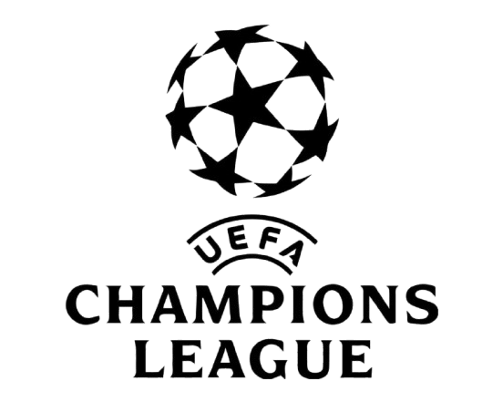

This Year's UEFA Champions League
Another season has already begun, and so has another year of top European competition takes place. This will be the third season to feature UEFA's new champions league format which has led to PSG(Paris Saint Germain) winning their first and second Champions League titles. This year lines up to be another exciting year. One of the 36 teams who are participating will bring glory back to their stadium on the road to Madrid.

The Favorites
The clubs who lead the favorites polls this year are FC Barcelona, Arsenal, PSG, and FC Bayern. Each of these teams have displayed incredible talents and feats on the field. The question is, will one of these four teams take the crown for this years competiion?